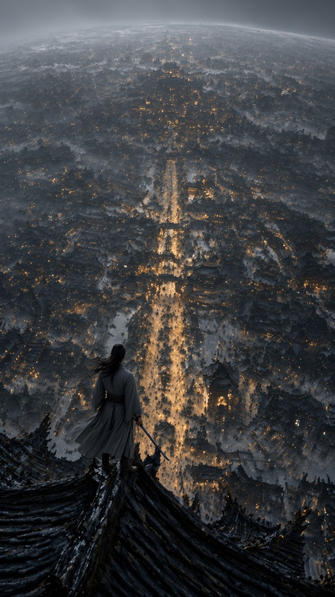
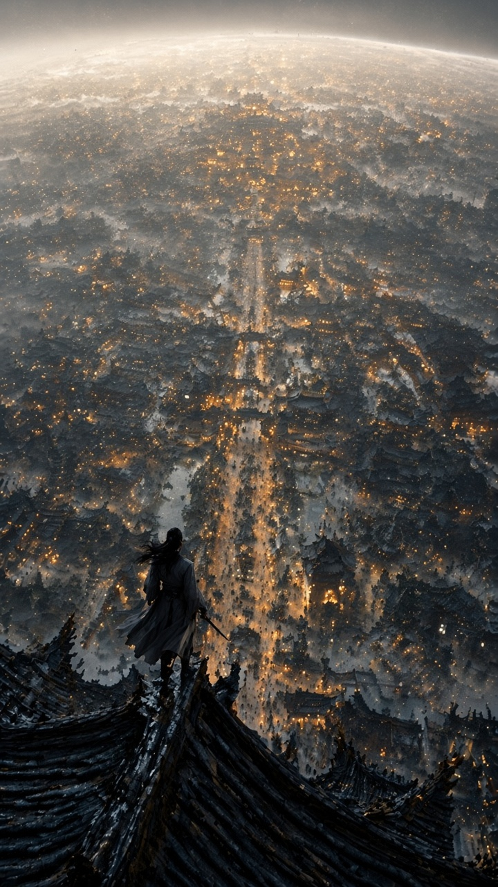
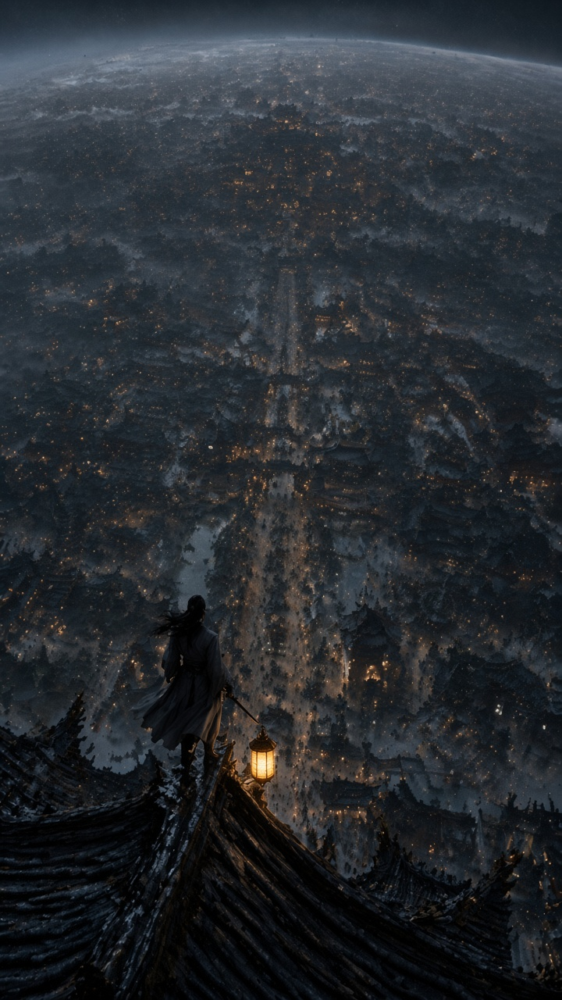
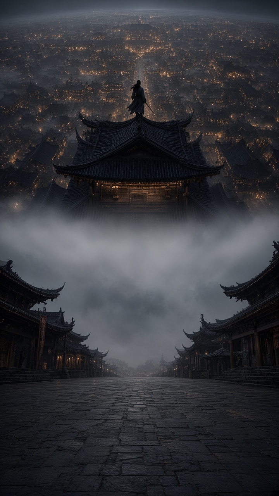
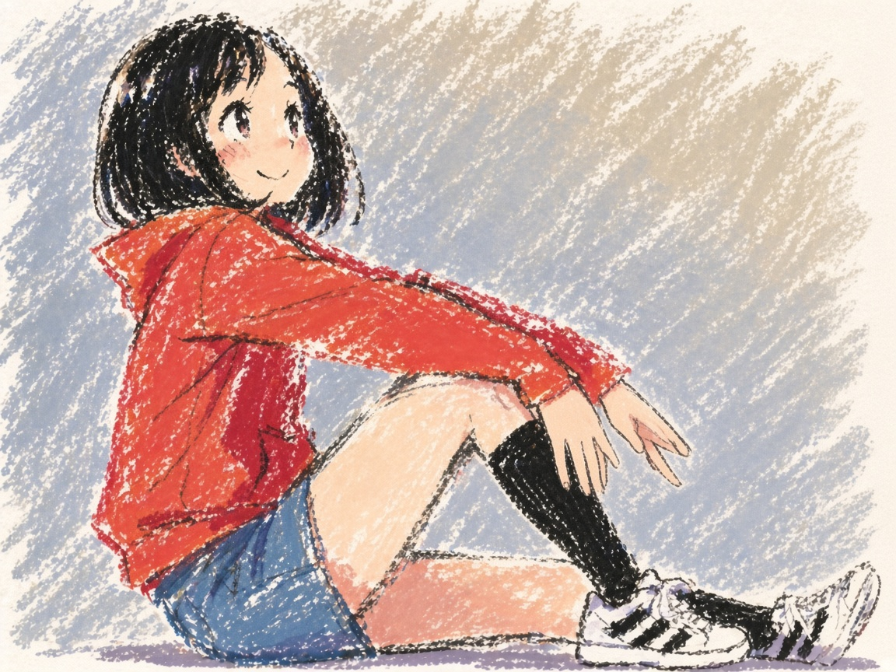
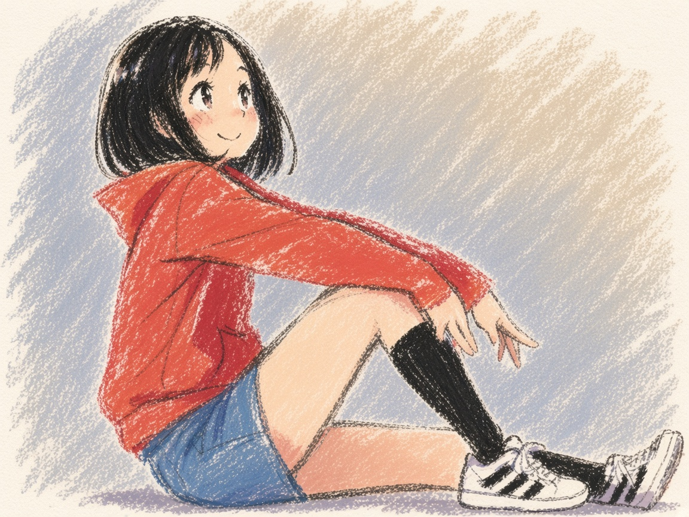
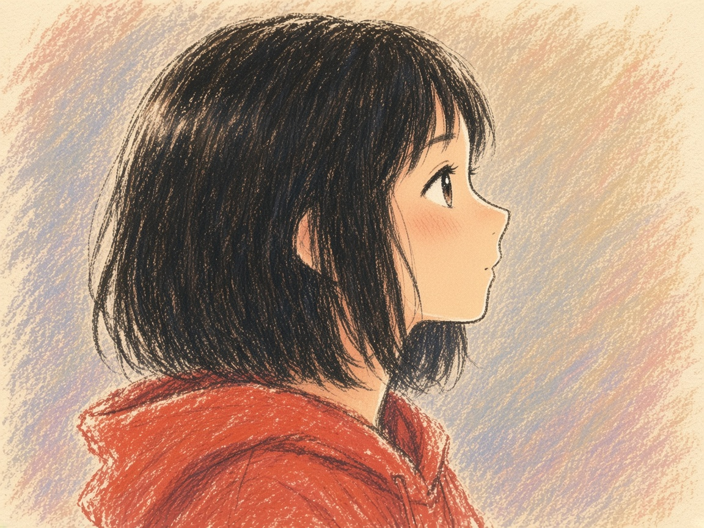

主页展陈重跑 · 2026-10-28 regen
按定稿清单重跑：draw → ui → icon → merge-ladder → style-lock（不生新图）→ prompt（不生图）。 新图写在本目录。旧页 homepage_rerun_1028/index.html 不覆盖。分数是本趟 converge 记下来的，不抄旧分。 合格线 ≥9.5，最多 4 轮，未到线取最高分。
draw · 四案例 × 四档
技能 /pmem-draw 普通图合同。从左到右：原图、low、medium、high、recompose。图下是本趟轮次和逐轮总分，图用胜出那一轮。





换机位：站在中央长街仰看屋脊，侠客成为屋脊上的小背影，雾带隔开街道与灯海。
low 第1轮 构图8.4/光影8.5/透视8.2/质感8.4/风格8.7。不足：人偏左、剑柄被袖挡住。第2轮蓝电剑，风格6.5，总分7.70。第3轮 8.29。第4轮 8.36，头发改成顶髻。
medium 第1轮 构图8.6/光影8.2/透视8.3/质感8.3/风格8.6。第2轮光影8.7，总分8.50。第4轮 构图8.5/光影8.8/透视8.2/质感8.4/风格8.6，总分8.51。人仍偏左。
high 第1轮 构图8.5/光影7.9/透视8.2/质感8.3/风格8.6。第2轮白描边，光影7.4，总分7.89。第3轮 构图8.4/光影8.1/透视8.2/质感8.3/风格8.5，总分8.28。第4轮灯笼被提在手里，8.13。
recompose 第1轮构图6.2，人在街心，总分7.40。第2轮仍在街心，构图6.6，总分7.62。第3轮 构图8.4/光影8.5/透视8.4/质感8.3/风格8.6，总分8.43。第4轮头顶巨檐把空间切飘，透视7.6，总分8.07。




换机位：同一粉彩少女改成侧面半身，红帽衫与蜡笔纸感保留，背景仍是斜向色粉笔。
low 第1轮 构图8.6/光影8.3/透视7.6/质感8.6/风格8.7，近手四指粘连，8.29。第2轮提示词改动超档，正式分压到 7.94。第3轮 构图8.6/光影8.3/透视7.9/质感8.6/风格8.7，仍无纸色指缝，8.37 胜出。第4轮手里多出白纸片，风格7.4，8.10。
medium 第1轮 构图8.5/光影8.4/透视7.7/质感8.5/风格8.6，8.32 胜出。第2轮超档，正式分 8.07。第3轮右脚被切出画外，构图7.8，8.22。第4轮另一只鞋没画出来，8.29。
high 第1轮 8.32，糖被切到鞋边。第2轮超档，正式分 8.02。第3轮 构图8.5/光影8.4/透视7.9/质感8.5/风格8.7，糖纸完整，8.42 胜出。第4轮指尖仍粘，8.38。未到 9.5。
recompose 第1轮 构图8.4/光影8.2/透视8.0/质感8.6/风格8.8，裁切偏头像，8.37。第2轮超档，正式分 7.91。第3轮 构图8.8/光影8.3/透视8.5/质感8.6/风格8.6，裁到胸口，8.58 胜出。第4轮粉笔回到蓝灰，裁切又停在肩线，8.50。
尚未开跑。
尚未开跑。
界面 · 花房主界面
尚未开跑。按 /pmem-ui，9:16，不垫参考。
图标 A / C
尚未开跑。按 /pmem-icon。
克隆 / 变体
尚未开跑。仍在 /pmem-draw 的克隆合同与变体合同。
合成梯
尚未开跑。按 /pmem-merge-ladder。
锁风格
尚未开跑。按 /pmem-style-lock，不生新图。
提示词
尚未开跑。按 /pmem-prompt，不生图。